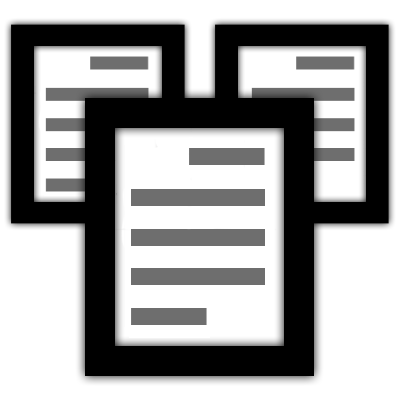

Email Draft Duplicator
Privacy Policy
Last Updated: June 27, 2024
Email Draft Duplicator ("we", "our", "us") values your privacy. This Privacy Policy explains how we collect, use, store, and protect your information when you use our Gmail Addon.
Data Collection and Usage
Email Draft Duplicator will only use Gmail access to read and compose emails to duplicate email drafts. Specifically:
- Reading Emails: We read the subjects of all email drafts to display them in a dropdown menu for you to select which drafts to duplicate. We only access the full content of the drafts you select for duplication.
- Composing Emails: We only compose emails to make copies of the email drafts you choose to duplicate.
Data Protection Mechanisms
We implement the following security measures to protect your data:
- Access Control: Access to your data is restricted to you and Google. We do not have access to your data, and it is not stored on our servers.
- Data Minimization: We only access the minimum amount of data necessary to provide our services.
- Security Practices: All data processing is conducted within Google's infrastructure. We rely on Google's robust security infrastructure to ensure the safety and privacy of your data during transmission and processing between Gmail and Google Cloud Project services.
Data Retention and Deletion
- Data Retention: We do not retain any personal data. The addon only processes data in real-time to perform its function of duplicating email drafts.
- Data Deletion: Since we do not store any data, there is no data to delete. All operations are performed in real-time, and the data is not retained after the operation is completed.
Data Sharing and Transfer
- Third-Party Sharing: We do not sell, trade, or otherwise transfer your information to outside parties. The only parties that have access to the data are you and Google.
- No Outbound Connections: The app has no outbound network connections. All data processing is done locally within your Gmail account and Google's servers.
Use of Google User Data
Our use of information received from Google APIs will adhere to the Google API Services User Data Policy, including the Limited Use requirements. We only use Google user data for the purposes of providing or improving user-facing features that are prominent in the requesting application's user interface. We do not use this data for any other purposes, including but not limited to targeted advertising or building user profiles.
Changes to This Privacy Policy
We may update our Privacy Policy from time to time. We will notify you of any changes by posting the new Privacy Policy on this page and updating the "last updated" date at the top of this Privacy Policy.